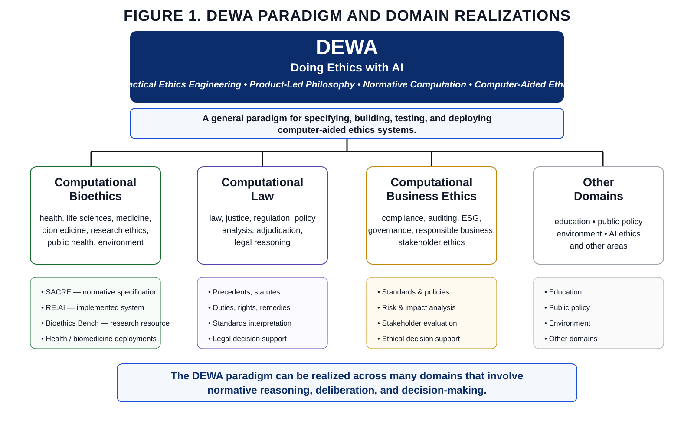
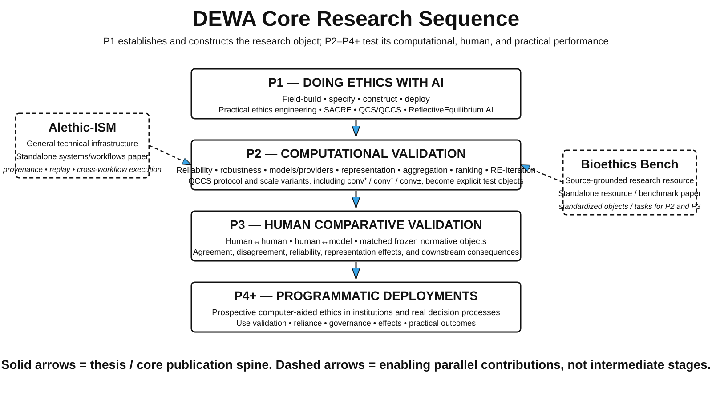
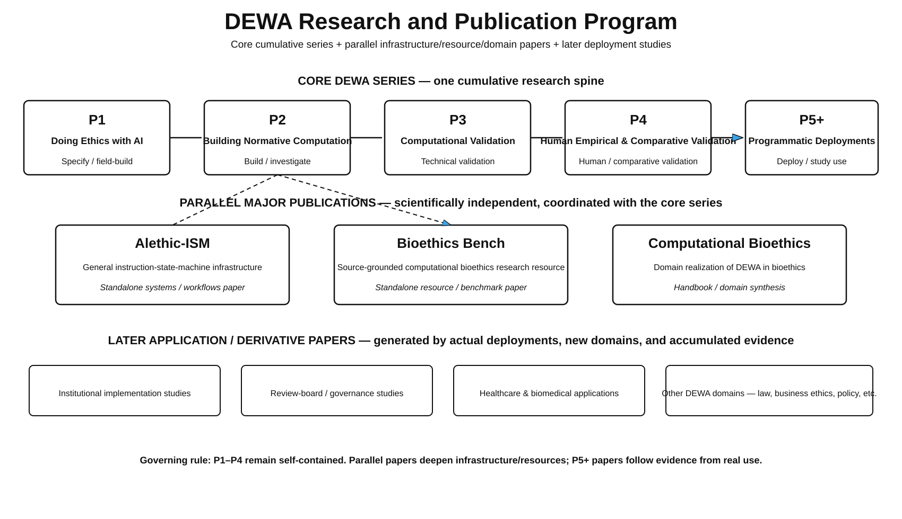

Doing Ethics with AI
Doing Ethics with AIEngineering instruments for practical ethics.
Doing Ethics with AI (DEWA) is a research program in practical ethics engineering, product-led philosophy, normative computation, and computer-aided ethics: making methods of ethical reasoning explicit enough to specify, build, inspect, test, revise, and use.
How should AI be governed?
Studies the ethical implications, risks, institutions, policies, and design choices surrounding artificial intelligence.
How should machines act?
Studies systems that themselves make or implement ethically relevant decisions.
How can people do ethics better?
Builds computational instruments for specifying, testing, comparing, revising, and applying normative methods.
The program before the papers.
DEWA is a general paradigm that can be realized in multiple normative domains. Its core research sequence then follows one worked method from specification through construction, validation, and prospective use.


From philosophical method to inspectable artifact.
DEWA treats specifications, executable procedures, interfaces, datasets, and deployed systems as part of the methodological surface of practical ethics.

Normative computation pipeline
The method becomes increasingly explicit about inputs, operations, intermediate judgments, outputs, and execution conditions.
Product-led philosophy
Construction and use feed back into philosophical understanding rather than merely implementing a finished theory.
SACRE makes reflective equilibrium executable and iterative.
Structurally Analyzed Collective Reflective Equilibrium (SACRE) represents a scenario and policy candidates from public, expert, and framework sources, compares their cross-source convergence, ranks the resulting coherence field, and permits directed revision followed by a fresh equilibration cycle.
Reflective equilibrium becomes a research object.
Once candidates, pairwise judgments, aggregation rules, rankings, directives, and iteration states persist, the same normative object can be rerun, compared, challenged, revised, and studied under controlled variation.
The program is built as working computational infrastructure.
These source-controlled screens show what the conceptual architecture becomes when implemented: represented normative objects, executable graphs, persistent runs, and research interfaces.


Application screenshots demonstrate implemented capability; they are not presented here as confirmatory validation results.
A coordinated portfolio, not one expanding paper.
The core P1–P5+ series remains cumulative and self-contained. Alethic-ISM, Bioethics Bench, and Computational Bioethics are parallel major contributions with independent scientific identities.

ReflectiveEquilibrium.AI
The purpose-built SACRE instrument: represent cases, execute QCCS comparisons, inspect results, preserve runs, compare configurations, revise candidates through RE-Iteration, and maintain a research record.
Open the application →Bioethics Bench
A source-grounded collection of bioethics cases and policy options with concise/detailed representations, sourcing, review status, and task contracts for systematic computational and human study.
Alethic-ISM
A domain-neutral instruction-state-machine architecture in which graph execution, immutable states, provenance, replay, multi-model processing, and publishing can be represented within one computational object.
View the systems repository →QCS & QCCS
Quantified conceptual scoring methods for structured conceptual intensity and pairwise convergence judgments. QCCS supplies the semantic comparison operation used within SACRE.
Open the interactive demo →Construction is evidence about buildability. Validation asks different questions.
The program separates developmental execution from confirmatory claims. Repeated model runs, matched human judgments, and real-world deployment each require their own frozen objects, protocols, and evidence standards.
Reliability and robustness
Repeated execution, model/provider effects, concise versus detailed representations, perturbation, aggregation sensitivity, ranking stability, QCS/QCCS behavior, RE-Iteration, failure states, cost, and reproducibility.
Human and model comparison
Human–human reliability, test–retest where appropriate, expert/lay variation, human–model correspondence, disagreement localization, representation effects, and downstream policy/ranking behavior.
Prospective computer-aided ethics
Feasibility, adoption, deliberation, documentation, disagreement identification, revision, reliance calibration, governance, user experience, error recovery, and practical outcomes in real settings.
Computational bioethics.
Bioethics is the most developed current setting in which the wider DEWA program is being instantiated, because it combines philosophical methods, empirical evidence, professional judgment, institutional procedures, and consequential decisions.
Computational bioethics studies how bioethical analytic processes can be given computational form through engineered normative instruments, research resources, and interactive applications. SACRE → ReflectiveEquilibrium.AI is one developed example; Bioethics Bench supplies shared research objects; P3 and P4 provide the validation layers needed before stronger claims of computer-aided ethics can be made.
The domain contribution remains independently intelligible for bioethics audiences while drawing its general field-building concepts from DEWA.
Doing Ethics with AI.
Developed across philosophical, computational, and bioethics research, with publications and artifacts maturing on different timelines.
Research associated with Sankalpa Ghose, Kasra Rasaee, Peter Singer, Julian Savulescu, collaborators, and Alethic Research. Public repositories and deployed research artifacts are linked below; manuscript claims remain governed by their respective publication and validation stages.